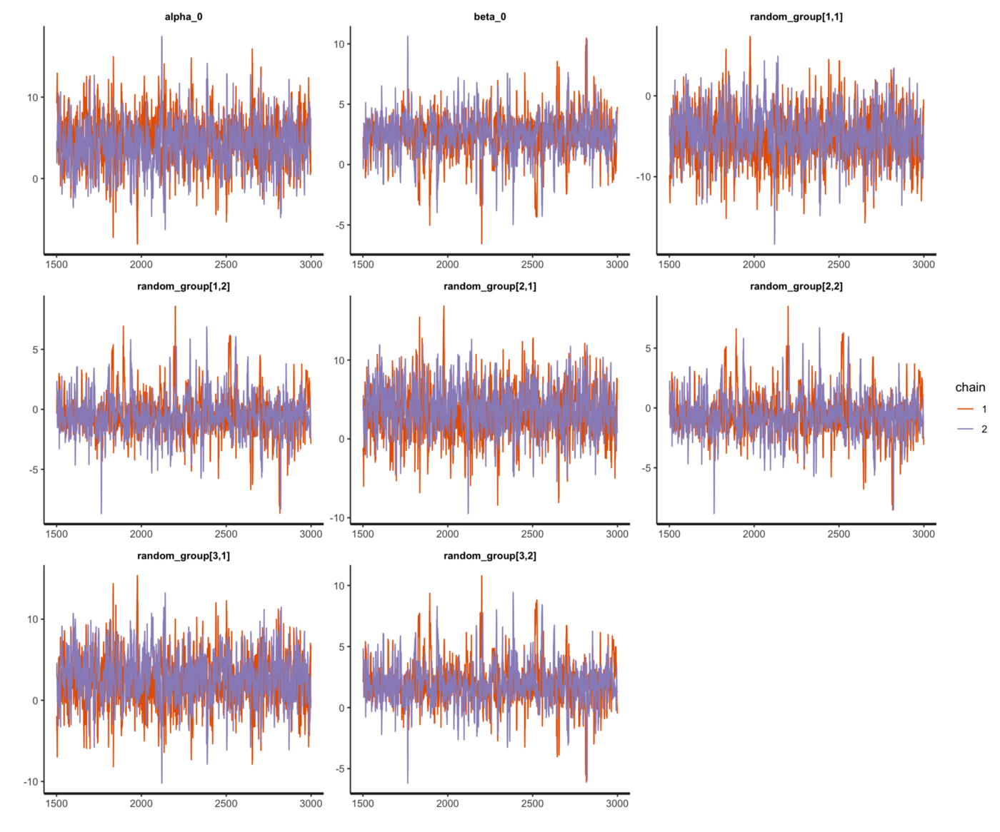

Simulation-based Linear Mixed-effects Models with Stan
Author
Yingqi Jing
Published
July 22, 2025
In this blog, I will provide a step-by-step instruction of how we can generate data from a mixed effect model and recover the parameters of the model with the simulated dataset. This simulation-based experiment can help us better understand the structure and generative process of the multilevel model with correlated random intercepts and slopes. To proceed, I will first illustrate the general form of mixed effect models, and generate data based on a given set of design matrices and parameters (\(X,\beta, Z, b\)). In the end, I will set a Bayesian model to estimate the parameters on the simulated data via stan.
1 Matrix form of the mixed effect regression model
The general form of a mixed effect model can be illustrated in the following way:
\[
y \sim X \beta + Z b + \epsilon
\]
where \(y\) is a vector of dependent variables, and the two design matrices, \(X\) and \(Z\), are related to fixed effects and random effects, respectively. The parameters of fixed effects are captured by \(\beta\), and the random effects (e.g., random intercepts and slopes) are specified in \(b\), which is generated from a Multivariate Normal (MN) distribution with mean \(0\) and variance-covariance matrix \(\Sigma\). The random errors are indicated by \(\epsilon\).
To be more specific, I will expand the matrix form and provide a detailed description of the process for generating the fixed effects, random effects and response. As an example, I will assume a continuous predictor \(x\) and correlated random intercepts and slopes. This can also be expressed by the lmer style syntax as: \[
y \sim 1 + x + (x | group)
\]
The design matrix \(X\) consists of two columns, where the first column of 1 is a dummy column related to the intercept and the second column is the predictor \(x\) ranging from 1 to 10 for each group. The parameters of \(\beta\) represent the intercept and slope at the population level.
Step 2: generate random effects (\(Zb\))
Before simulating the correlated random intercepts and slopes, we first need to prepare the variance-covariance matrix \(\Sigma\), which is created by multiplying a diagonal matrix, correlation matrix (\(R\)) and a diagonal matrix.
With the variance-covariance matrix, we can generate the parameters \(b\) for random intercepts and slopes. The resulting matrix \(b\) includes two columns, corresponds to random intercepts and slopes, respectively. Each row of the matrix b indicates the group-specific random effects.
To make it easier, I also include the R scripts for you to generate the data based on the matrix format described above. Each block of scripts is corresponding to the previous steps for creating fixed, random and response outcomes.
Step 1: generate fixed effects (\(X\beta\))
N_group =3# number of groupsN_elements_group =10# number of elements in each groupdf =data.frame(intercept =1, x =1:N_elements_group,group_id=rep(1:N_group, each = N_elements_group),y =0)X =as.matrix(df[, c("intercept", "x")]) # design matrix Xfixed_outcome = X %*%c(6, 4) # X*betahead(fixed_outcome)
It is worth noting here that the two design matrices, \(X\) and \(Z\), are the same in our case, and we can thus generate the random outcome by using elementwise multiplication of \(X\) and a reformated \(b\).
rho =0.7# correlation coefficientR =matrix(c(1, rho, rho, 1), ncol =2) # Rsig1 =3# sd of random interceptssig2 =2# sd of random slopesdiag_mat_tau =matrix(c(sig1, 0, 0, sig2), ncol =2) # diagonal matrixSigma = diag_mat_tau %*% R %*% diag_mat_tau # VCVrandom_eff =mvrnorm(N_group, c(0, 0), Sigma)head(random_eff)b = random_eff[rep(seq_len(nrow(random_eff)), each = N_elements_group), ]# Note: X and Z are the same in our case, and we use elementwise matrix multiplicationrandom_outcome =rowSums(X * b)head(random_outcome)
3 Fit the linear mixed effect regression model with stan
With the simulated dataset, we can try to recover the parameters of the hierarchical model with correlated random intercepts and slopes. Here I am using stan to build the model and run the analysis via NUTS sampler. The structure of the model can be summarised below. Note that I didn’t decompose the correlation matrix (\(R\)) via Cholesky factorization (see this blog about Multivariate Normal distribution and Cholesky decomposition). Instead, I am using a LKJ correlation prior for \(R\).
ls_final =list(N =nrow(df_final), x =as.vector(df_final$x), y =as.vector(df_final$y),N_group =length(unique(df_final$group_id)), group_id = df_final$group_id)lmer_md =stan_model(file ="./stan_model/lmer_prior_R.stan")fit_lmer_stan =sampling(lmer_md, data = ls_final,chains =2, iter =3000, cores =2)
3.4 Traceplot
rstan::traceplot(fit_lmer_stan, pars =c("alpha_0", "beta_0", "random_group"))

traceplot of posterior parameter estimates
4 Useful references and links
Nicenboim, Schad and Vasishth (2021) An Introduction to Bayesian Data Analysis for Cognitive Science. Chapter 5 Online.
Sorensen, Tanner & Shravan Vasishth (2015) Bayesian Linear Mixed Models Using Stan: A Tutorial for Psychologists, Linguists, and Cognitive Scientists. arXiv Preprint arXiv:1506.06201.